SimuNed
Questão 91.
No cultivo por hidroponia, são utilizadas soluções nutritivas contendo macronutrientes e micronutrientes essenciais. Além dos nutrientes, o pH é um parâmetro de extrema importância, uma vez que ele afeta a preparação da solução nutritiva e a absorção dos nutrientes pelas plantas. Para o cultivo de alface, valores de pH entre 5,5 e 6,5 são ideais para o seu desenvolvimento.
As correções de pH são feitas pela adição de compostos ácidos ou básicos, mas não devem introduzir elementos nocivos às plantas. Na tabela, são apresentados alguns dados da composição da solução nutritiva de referência para esse cultivo. Também é apresentada a composição de uma solução preparada por um produtor de cultivo hidropônico.
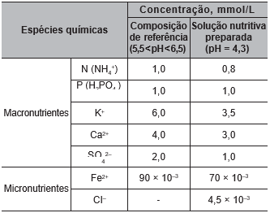Para correção do pH da solução nutritiva preparada, esse produtor pode empregar uma solução de
B) sulfato de cálcio, CaSO4.
C) óxido de alumínio, Al2O3.
D) cloreto de ferro (II), FeCl2.
E) hidróxido de potássio, KOH.
Questão 92.
O sino dos ventos é composto por várias barras metálicas de mesmo material e espessura, mas de comprimentos diferentes, conforme a figura.
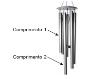Considere f1 e v1, respectivamente, como a frequência fundamental e a velocidade de propagação do som emitido pela barra de menor comprimento, e f2 e v2 são essas mesmas grandezas para o som emitido pela barra de maior comprimento.
As relações entre as frequências fundamentais e entre as velocidades de propagação são, respectivamente,
B) f1 < f2 e v1 < v2.
C) f1 < f2 e v1 < v2.
D) f1 < f2 e v1 < v2.
E) f1 < f2 e v1 < v2.
Questão 93.
O polvo mimético apresenta padrões cromáticos e comportamentos muito curiosos. Frequentemente, muda a orientação de seus tentáculos, assemelhando-se a alguns animais. As imagens 1, 3 e 5 apresentam polvos mimetizando, respectivamente, um peixe-linguado (2), um peixe-leão (4) e uma serpente-marinha (6).
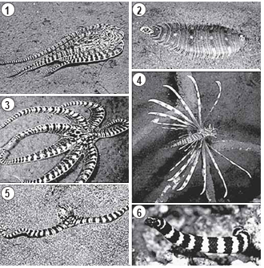Do ponto de vista evolutivo, a capacidade apresentada se estabeleceu porque os polvos.
B) a mudança de nome era impensável passaram por mutações similares a esses organismos.
C) observaram esses animais em seus nichos ecológicos.
D) resultaram de convergência adaptativa com essas espécies.
E) sobreviveram às pressões seletivas com esses comportamentos.
Questão 94.
A figura foi extraída de um antigo jogo para computadores, chamado Bang! Bang!.
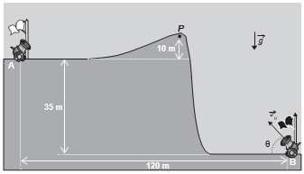No jogo, dois competidores controlam os canhões A e B, disparando balas alternadamente com o objetivo de atingir o canhão do adversário; para isso, atribuem valores estimados para o módulo da velocidade inicial de disparo (𝑢O) e para o ângulo de disparo (q).
Em determinado momento de uma partida, o competidor B deve disparar; ele sabe que a bala disparada anteriormente, q = 53°, passou tangenciando o ponto P.
No jogo, é igual a 10 m/s2. Considere sen 53° = 0,8, cos 53° = 0,6 e desprezível a ação de forças dissipativas.
Com base nas distâncias dadas e mantendo o último ângulo de disparo, qual deveria ser, aproximadamente, o menor valor de que permitiria ao disparo efetuado pelo canhão B atingir o canhão A?
B) 35 m/s.
C) 40 m/s.
D) 45 m/s.
E) 50 m/s.
Questão 95.
Os pesticidas organoclorados foram amplamente empregados na agricultura, contudo, em razão das suas elevadas toxicidades e persistências no meio ambiente, eles foram banidos. Considere a aplicação de 500 g de um pesticida organoclorado em uma cultura e que, em certas condições, o tempo de meia-vida do pesticida no solo seja de 5 anos.
A massa do pesticida no decorrer de 35 anos será mais próxima de
B) 31,2 g.
C) 62,5 g.
D) 125,0 g.
E) 250,0 g.
Questão 96.
A sequência de nucleotídeos do RNA mensageiro presentes em um gene de um fungo, constituída de sete códons, está escrita a seguir.
Pesquisadores submeteram a sequência a mutações independentes. Sabe-se que os códons UAG e UAA são terminais, ou seja, indicam a interrupção da tradução.
Qual mutação produzirá a menor proteína?
B) Substituição de C por U no códon 4.
C) Substituição de G por C no códon 6.
D) Substituição de A por G no códon 7.
E) Deleção dos dois primeiros nucleotídeos no códon 5.
Questão 97.
A simples atitude de não jogar direto no lixo ou no ralo da pia o óleo de cozinha usado pode contribuir para a redução da poluição ambiental. Mas o que fazer com o óleo vegetal que não será mais usado? Não existe um modelo ideal de descarte, mas uma alternativa simples tem sido reaproveitá-lo para fazer sabão. Para isso, são necessários, além do próprio óleo, água e soda cáustica.
Com base no texto, a reação química que permite o reaproveitamento do óleo vegetal é denominada
B) epoxidação.
C) substituição.
D) esterificação.
E) saponificação.
Questão 98.
Durante o desenvolvimento embrionário humano ocorre uma comunicação entre os átrios direito e esquerdo através do forame oval (ou forame de Botal). Essa comunicação não causa prejuízos à circulação do bebê em formação, exceto se ela perdurar após o nascimento.
Os prejuízos no período embrionário são evitados porque a circulação fetal se assemelha à dos(as)
B) répteis, porque a mistura de sangue é minimizada por um metabolismo lento.
C) proeza da premiação de uma história ambientada no interior do Nordeste brasileiro. crocodilianos, porque a separação dos ventrículos impede a mistura sanguínea.
D) peixes, porque a circulação é simples, ocorrendo uma passagem única pelo coração.
E) anfíbios, porque pressões diferenciais isolam temporalmente o sangue venoso do arterial.
Questão 99.
Na cidade de São Paulo, as ilhas de calor são responsáveis pela alteração da direção do fluxo da brisa marítima que deveria atingir a região de mananciais. Mas, ao cruzar a ilha de calor, a brisa marítima agora encontra um fluxo de ar vertical, que transfere para ela energia térmica absorvida das superfícies quentes da cidade, deslocando-a para altas altitudes. Dessa maneira, há condensação e chuvas fortes no centro da cidade, em vez de na região de mananciais. A imagem apresenta os três subsistemas que trocam energia nesse fenômeno.
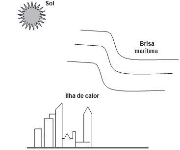No processo de fortes chuvas no centro da cidade de São Paulo, há dois mecanismos dominantes de transferência de calor: entre o Sol e a ilha de calor, e entre a ilha de calor e a brisa marítima.
Esses mecanismos são, respectivamente,
B) irradiação e irradiação.
C) condução e irradiação.
D) convecção e irradiação.
E) convecção e convecção.
Questão 100.
No seu estudo sobre a queda dos corpos, Aristóteles afirmava que se abandonarmos corpos leves e pesados de uma mesma altura, o mais pesado chegaria mais rápido ao solo. Essa ideia está apoiada em algo que é difícil de refutar, a observação direta da realidade baseada no senso comum. Após uma aula de física, dois colegas estavam discutindo sobre a queda dos corpos, e um tentava convencer o outro de que tinha razão:
Colega A: “O corpo mais pesado cai mais rápido que um menos pesado, quando largado de uma mesma altura. Eu provo, largando uma pedra e uma rolha. A pedra chega antes. Pronto! Tá provado!”.
Colega B: “Eu não acho! Peguei uma folha de papel esticado e deixei cair. Quando amassei, ela caiu mais rápido. Como isso é possível? Se era a mesma folha de papel, deveria cair do mesmo jeito. Tem que ter outra explicação!”.
O aspecto físico comum que explica a diferença de comportamento dos corpos em queda nessa discussão é o(a)
B) resistência do ar
C) massa dos corpos.
D) densidade dos corpos.
E) aceleração da gravidade.
Questão 101.
A obtenção de etanol utilizando a cana-de-açúcar envolve a fermentação dos monossacarídeos formadores da sacarose contida no melaço. Um desses formadores é a glicose (C6H12O6), cuja fermentação produz cerca de 50 g de etanol a partir de 100 g de glicose, conforme a equação química descrita.
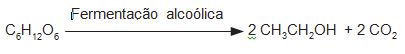Em uma condição específica de fermentação, obtém-se 80% de conversão em etanol que, após sua purificação, apresenta densidade igual a 0,80 g/mL. O melaço utilizado apresentou 50 kg de monossacarídeos na forma de glicose.
O volume de etanol, em litro, obtido nesse processo é mais próximo de
B) 20.
C) 25.
D) 64.
E) 100.
Questão 102.
É possível ligar aparelhos elétricos de baixa corrente utilizando materiais comuns de laboratório no lugar das tradicionais pilhas. A ilustração apresenta uma montagem que faz funcionar um cronômetro digital.
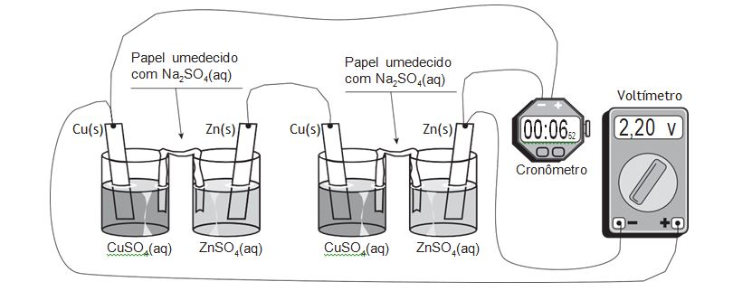Utilizando a representação de projetos elétricos, o circuito equivalente a esse sistema é
B) 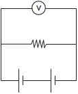
C) 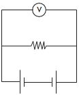
D) 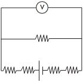
E) 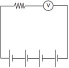
Questão 103.
Um técnico analisou um lote de analgésicos que supostamente estava fora das especificações. A composição prevista era 100 mg de ácido acetilsalicílico por comprimido (princípio ativo, cuja estrutura está apresentada na figura), além do amido e da celulose (componentes inertes). O técnico realizou os seguintes testes:
1) obtenção da massa do comprimido;
2) medição da densidade do comprimido;
3) verificação do pH com papel indicador;
4) determinação da temperatura de fusão do comprimido;
5) titulação com solução aquosa de NaOH.
Após a realização dos testes, o lote do medicamento foi reprovado porque a quantidade de ácido acetilsalicílico por comprimido foi de apenas 40% da esperada
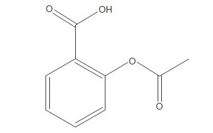
O teste que permitiu reprovar o lote de analgésicos foi o de número
B) 2.
C) 3.
D) 4.
E) 5.
Questão 104.
O rompimento da barragem de rejeitos de mineração no município mineiro de Mariana e o derramamento de produtos tóxicos nas águas do Rio Doce, ocorridos em 2015, ainda têm consequências para os organismos que habitam o Parque Nacional Marinho de Abrolhos, localizado a mais de 1 000 quilômetros de distância. Esse desastre ambiental afetou o fitoplâncton, as esponjas, as algas macroscópicas, os peixes herbívoros e os golfinhos.
Concentrações mais elevadas dos compostos citados são encontradas em:
B) golfinhos.
C) fitoplâncton.
D) peixes herbívoros.
E) algas macroscópicas.
Questão 105.
Duas esferas carregadas com cargas iguais em módulo e sinais contrários estão ligadas por uma haste rígida isolante na forma de haltere. O sistema se movimenta sob ação da gravidade numa região que tem um campo magnético horizontal uniforme (𝐵), da esquerda para a direita. A imagem apresenta o sistema visto de cima para baixo, no mesmo sentido da aceleração da gravidade (𝑔) que atua na região.
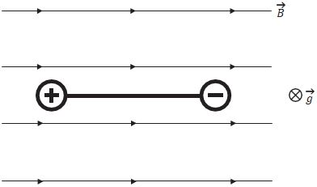
Visto de cima, o diagrama esquemático das forças magnéticas que atuam no sistema, no momento inicial em que as cargas penetram na região de campo magnético, está representado em

B)

C)

D)

E)

Questão 106.
A icterícia, popularmente conhecida por amarelão, é uma patologia frequente em recém-nascidos. Um bebê com icterícia não consegue metabolizar e excretar de forma eficiente a bilirrubina. Com isso, o acúmulo dessa substância deixa-o com a pele amarelada. A fototerapia é um tratamento da icterícia neonatal, que consiste na irradiação de luz no bebê. Na presença de luz, a bilirrubina é convertida no seu isômero lumirrubina que, por ser mais solúvel em água, é excretada pela bile ou pela urina. A imagem ilustra o que ocorre nesse tratamento.
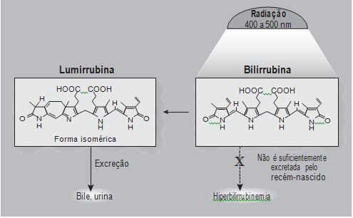
Na fototerapia, a luz provoca a conversão da bilirrubina no seu isômero
B) funcional.
C) de cadeia.
D) de posição.
E) geométrico.
Questão 107.
Analisando a ficha técnica de um automóvel popular, verificam-se algumas características em relação ao seu desempenho. Considerando o mesmo automóvel em duas versões, uma delas funcionando a álcool e outra, a gasolina, tem-se os dados apresentados no quadro, em relação ao desempenho de cada motor.
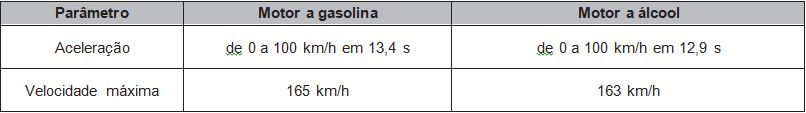
Considerando desprezível a resistência do ar, qual versão apresenta a maior potência?
B) Como a versão a gasolina atinge o maior valor de energia cinética, esta é a que desenvolve a maior potência.
C) Como a versão a álcool apresenta a maior taxa de variação de energia cinética, esta é a que desenvolve a maior potência.
D) Como ambas as versões apresentam a mesma variação de velocidade no cálculo da aceleração, a potência desenvolvida é a mesma.
E) Como a versão a gasolina fica com o motor trabalhando por mais tempo para atingir os 100 km/h, esta é a que desenvolve a maior potência.
Questão 108.
TEXTO I
No cordel intitulado Senhor dos Anéis, de autoria de Gonçalo Ferreira da Silva, lê-se a sextilha:
A distância em relação
Ao nosso planeta amado
Pouco menos que a do Sol
Ele está distanciado
E menos denso que a água
Quando no normal estado
TEXTO II
Distâncias médias dos planetas ao Sol e suas densidades médias
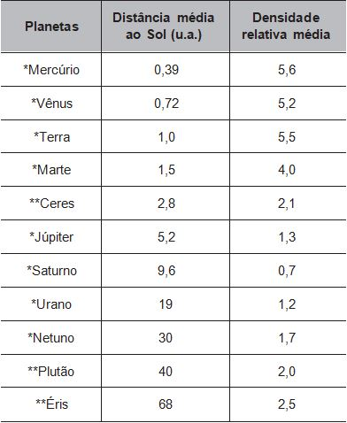
Considerando os versos da sextilha e as informações da tabela, a qual planeta o cordel faz referência?
B) Júpiter.
C) Urano.
D) Saturno.
E) Netuno.
Questão 109.
Cientistas da Universidade de New South Wales, na Austrália, demonstraram em 2012 que a Lei de Ohm é válida mesmo para fios finíssimos, cuja área da seção reta compreende alguns poucos átomos. A tabela apresenta as áreas e comprimentos de alguns dos fios construídos (respectivamente com as mesmas unidades de medida). Considere que a resistividade mantém-se constante para todas as geometrias (uma aproximação confirmada pelo estudo).
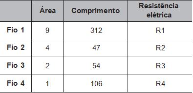
As resistências elétricas dos fios, em ordem crescente, são
B) R2 < R1 < R3 < R4.
C) R2 < R3 < R1 < R4.
D) R4 < R1 < R3 < R2.
E) R4 < R3 < R2 < R1.
Questão 110.
Organismos autótrofos e heterótrofos realizam processos complementares que associam os ciclos do carbono e do oxigênio. O carbono fixado pela energia luminosa ou a partir de compostos inorgânicos é eventualmente degradado pelos organismos, resultando em fontes de carbono como metano ou gás carbônico. Ainda, outros compostos orgânicos são catabolizados pelos seres, com menor rendimento energético, produzindo compostos secundários (subprodutos) que podem funcionar como combustíveis ambientais.
O processo metabólico associado à expressão combustíveis ambientais é a
B) fermentação.
C) quimiossíntese.
D) respiração aeróbica
E) fosforilação oxidativa.
Questão 111.
Uma escola iniciou o processo educativo para implantação da coleta seletiva e destino de materiais recicláveis. Para atingir seus objetivos, a instituição planejou:
1) sensibilizar a comunidade escolar, desenvolvendo atividades em sala e extraclasse de maneira contínua;
2) capacitar o pessoal responsável pela limpeza da escola quanto aos novos procedimentos adotados com a coleta seletiva; e
3) distribuir coletores de materiais recicláveis específicos nas salas, pátio e outros ambientes para acondicionamento dos resíduos.
Para completar a ação proposta no ambiente escolar, o que falta ser inserido no planejamento?
B) Firmar parceria com a prefeitura ou cooperativa de catadores para recolhimento dos materiais recicláveis e destinação apropriada.
C) Organizar visitas ao lixão ou aterro local para identificar aspectos importantes sobre a disposição final do lixo.
D) Divulgar na rádio local, no jornal impresso e nas redes sociais que a escola está realizando a coleta seletiva.
E) Colocar recipientes coletores de lixo reciclável fora da escola para entrega voluntária pela população.
Questão 112.
Os búfalos são animais considerados rústicos pelos criadores e, por isso, são deixados no campo sem controle reprodutivo. Por causa desse tipo de criação, a consanguinidade é favorecida, proporcionando o aparecimento de enfermidades, como o albinismo, defeitos cardíacos, entre outros. Separar os animais de forma adequada minimizaria a ocorrência desses problemas.
Qual procedimento biotecnológico prévio é recomendado nessa situação?
B) Terapia gênica.
C) Vacina de DNA.
D) Clonagem terapêutica.
E) Mapeamento genético.
Questão 113.
O ciclo do cobre é um experimento didático em que o cobre metálico é utilizado como reagente de partida. Após uma sequência de reações (I, II, III, IV e V), o cobre retorna ao seu estado inicial ao final do ciclo.
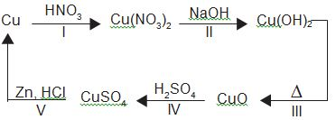
A reação de redução do cobre ocorre na etapa
B) II.
C) III.
D) IV.
E) V.
Questão 114.
Um dos exames clínicos mais tradicionais para medir a capacidade reflexa dos indivíduos é o exame do reflexo patelar. Esse exame consiste na estimulação da patela, um pequeno osso localizado na parte anterior da articulação do joelho, com um pequeno martelo. A resposta reflexa ao estímulo é caracterizada pelo levantamento da perna em que o estímulo foi aplicado.
Qual região específica do sistema nervoso coordena essa resposta?
B) Medula.
C) Cerebelo.
D) hipotálamo.
E) Neuro-hipófise.
Questão 115.
B) alumínio, cobre-aço e ferro.
C) cobre-aço, ferro e alumínio.
D) alumínio, ferro e cobre-aço.
E) ferro, alumínio e cobre-aço.
Questão 116.
As águas subterrâneas têm sido contaminadas pelo uso de pesticidas na agricultura. Entre as várias substâncias usualmente encontradas, algumas são apresentadas na figura. A distinção dessas substâncias pode ser feita por meio de uma análise química qualitativa, ou seja, determinando sua presença mediante a adição de um reagente específico. O hidróxido de sódio é capaz de identificar a presença de um desses pesticidas pela reação ácido-base de Brönsted-Lowry.
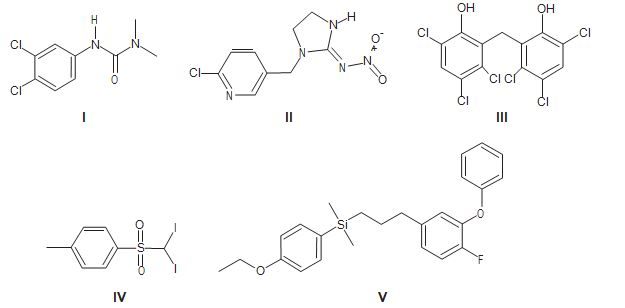
O teste positivo será observado com o pesticida
B) II
C) III
D) IV
E) V
Questão 117.
Com o aumento da população de suínos no Brasil, torna-se necessária a adoção de métodos para reduzir o potencial poluidor dos resíduos dessa agroindústria, uma vez que, comparativamente ao esgoto doméstico, os dejetos suínos são 200 vezes mais poluentes. Sendo assim, a utilização desses resíduos como matéria-prima na obtenção de combustíveis é uma alternativa que permite diversificar a matriz energética nacional, ao mesmo tempo em que parte dos recursos hídricos do país são preservados.
O biocombustível a que se refere o texto é o:
B) biogás.
C) butano.
D) metanol.
E) biodiesel.
Questão 118.
A curcumina, uma das substâncias que confere a cor alaranjada ao açafrão, pode auxiliar no combate à dengue quando adicionada à água de criadouros do mosquito transmissor. Essa substância acumula-se no intestino do inseto após ser ingerida com a água do criadouro e, quando ativada pela luz, induz a produção de espécies reativas de oxigênio que danificam de forma fatal o tecido do tubo digestório.
A forma de combate relatada tem como atividade o(a)
B) redução da eclosão dos ovos
C) comprometimento da metamorfose.
D) impedimento do desenvolvimento da larva.
E) repelência da forma transmissora da doença.
Questão 119.
Com o objetivo de identificar a melhor espécie produtora de madeira para construção (com resistência mecânica e à degradação), foram analisadas as estruturas anatômicas de cinco espécies, conforme o quadro.
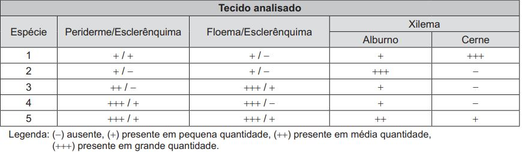
Qual espécie corresponde ao objetivo proposto?
B) 2.
C) 3.
D) 4.
E) 5.
Questão 120.
No outono, as folhas das árvores mudam de cor, de verde para tons de amarelo, castanho, laranja e vermelho. A cor verde das folhas deve-se ao pigmento clorofila. Nas plantas de folhas caducas, a produção de clorofila diminui e o tom verde desvanece, permitindo assim que outros pigmentos, como o caroteno, de coloração amarelo-alaranjado, e a antocianina, de tons avermelhados, passem a dominar a tonalidade das folhas. A coloração observada se dá em função da interação desses pigmentos com a radiação solar.
Conforme apresentado no espectro de absorção, as moléculas de clorofila absorvem a radiação solar nas regiões do azul e do vermelho, assim a luz refletida pelas folhas tem falta desses dois tons e as vemos na cor verde. Já as antocianinas absorvem a luz desde o azul até o verde. Nesse caso, a luz refletida pelas folhas que contêm antocianinas aparece conforme as cores complementares, ou seja, vermelho-alaranjado.
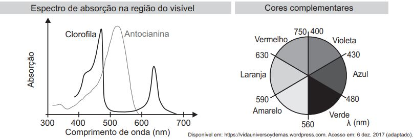
Em qual faixa do espectro visível os carotenos absorvem majoritariamente?
B) Entre o azul e o verde.
C) Entre o verde e o amarelo.
D) Entre o amarelo e o laranja.
E) Entre o laranja e o vermelho.
Questão 121.
Entre 2014 e 2016, as regiões central e oeste da África sofreram uma grave epidemia de febre hemorrágica causada pelo vírus ebola, que se manifesta em até 21 dias após a infecção e cuja taxa de letalidade (enfermos que vão a óbito) pode chegar a 90%. Em regiões de clima tropical e subtropical, um outro vírus também pode causar febre hemorrágica: o vírus da dengue, que, embora tenha período de incubação menor (até 10 dias), apresenta taxa de letalidade abaixo de 1%.
Segundo as informações do texto e aplicando princípios de evolução biológica às relações do tipo patógeno-hospedeiro, qual dos dois vírus infecta seres humanos há mais tempo?
B) Dengue, pois o menor período de incubação reflete duração mais longa do processo de coevolução patógeno-hospedeiro.
C) Ebola, cuja alta letalidade indica maior eficiência do vírus em parasitar seus hospedeiros, estabelecida ao longo de sua evolução.
D) Ebola, cujos surtos epidêmicos concentram-se no continente africano, reconhecido como berço da origem evolutiva dos seres humanos.
E) Dengue, cuja baixa letalidade indica maior eficiência do vírus em parasitar seus hospedeiros, estabelecida ao longo da coevolução patógeno-hospedeiro.
Questão 122.
A imagem apresenta as etapas do funcionamento de uma estação individual para tratamento do esgoto residencial
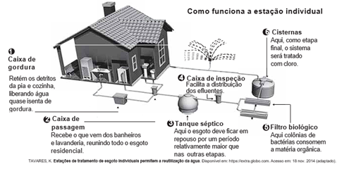
Em qual etapa decanta-se o lodo a ser separado do esgoto residencial
B) 2
C) 3
D) 5
E) 6
Questão 123.
O plantio por estaquia é um método de propagação de plantas no qual partes de um espécime são colocadas no solo para produzir novas gerações. Na floricultura, é comum utilizar o caule das roseiras para estaquia, pois a propagação da planta é positiva em razão da aplicação de auxinas na porção inferior do caule.
A utilização de auxinas no método de estaquia das roseiras contribui para
B) produção de gemas laterais.
C) formação de folhas maiores.
D) formação de raízes adventícias.
E) produção de compostos energéticos.
Questão 124.
O emprego de células de combustível a hidrogênio pode ser uma tecnologia adequada ao transporte automotivo.
O quadro apresenta características de cinco tecnologias mais proeminentes de células de combustível.
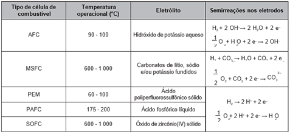
Testes operacionais com esses tipos de células têm indicado que as melhores alternativas para veículos são as que operam em baixos níveis de energia térmica, são formadas por membranas de eletrólitos poliméricos e ocorrem em meio ácido.
A tecnologia testada mais adequada para o emprego em veículos automotivos é a célula de combustível
B) MSFC.
C) PEM.
D) PAFC.
E) SOFC.
Questão 125.
Considere a tirinha, na situação em que a temperatura do ambiente é inferior à temperatura corporal dos personagens.
O incômodo mencionado pelo personagem da tirinha deve-se ao fato de que, em dias úmidos.
B) o suor apresenta maior dificuldade para evaporar do corpo.
C) a taxa de absorção de radiação pelo corpo torna-se maior.
D) o ar torna-se mau condutor e dificulta o processo de liberação de calor.
E) o vapor-d’água presente no ar condensa-se ao entrar em contato com a pele.
Questão 126.
Um garoto precisa montar um circuito que acenda três lâmpadas de cores diferentes, uma de cada vez. Ele dispõe das lâmpadas, de fios, uma bateria e dois interruptores, como ilustrado, junto com seu símbolo de três pontos. Quando esse interruptor fecha AB, abre BC e vice-versa.

O garoto fez cinco circuitos elétricos usando os dois interruptores, mas apenas um satisfaz a sua necessidade.
Esse circuito é representado por
B) 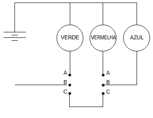
C)

D) 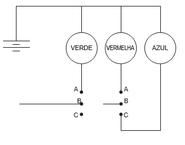
E) 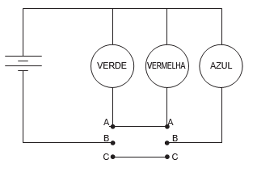
Questão 127.
Estudo aponta que a extinção de preguiças-gigantes, cuja base da dieta eram frutos e sementes, provocou impactos consideráveis na vegetação do Pantanal brasileiro. A flora, embora não tenha desaparecido, tornou-se menos abundante que no passado, além de ocupar áreas mais restritas.
O evento descrito com a flora ocorreu em razão da redução
B) do tamanho das plantas.
C) de fatores de disseminação das sementes.
D) da quantidade de sementes por fruto.
E) dos hábitats disponíveis para as plantas.
Questão 128.
Carros elétricos estão cada vez mais baratos, no entanto, os órgãos governamentais e a indústria se preocupam com o tempo de recarga das baterias, que é muito mais lento quando comparado ao tempo gasto para encher o tanque de combustível. Portanto, os usuários de transporte individual precisam se conscientizar dos ganhos ambientais dessa mudança e planejar com antecedência seus percursos, pensando em pausas necessárias para recargas.
Após realizar um percurso de 110 km, um motorista pretende recarregar as baterias de seu carro elétrico, que tem um desempenho médio de 5,0 km/kWh, usando um carregador ideal que opera a uma tensão de 220 V e é percorrido por uma corrente de 20 A.
Quantas horas são necessárias para recarregar a energia utilizada nesse percurso?
B) 0,125
C) 2,5
D) 5,0
E) 8,0
Questão 129.
Nas angiospermas, além da fertilização da oosfera, existe uma segunda fertilização que resulta num tecido triploide.
Essa segunda fertilização foi importante evolutivamente, pois viabilizou a formação de um tecido de
B) reserva para o embrião.
C) revestimento para a semente.
D) proteção para o megagametófito.
E) vascularização para a planta jovem.
Questão 130.
Com o objetivo de proporcionar aroma e sabor a diversos alimentos, a indústria alimentícia se utiliza de flavorizantes. Em geral, essas substâncias são ésteres, como as apresentadas no quadro.
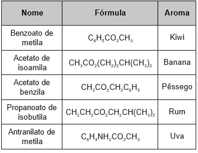
O aroma do flavorizante derivado do ácido etanoico e que apresenta cadeia carbônica saturada é de
B) banana.
C) pêssego.
D) rum.
E) uva.
Questão 131.
O eletrocardiograma é um exame cardíaco que mede a intensidade dos sinais elétricos advindos do coração. A imagem apresenta o resultado típico obtido em um paciente saudável e a intensidade do sinal (VEC ) em função do tempo.
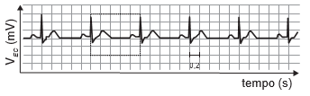
De acordo com o eletrocardiograma apresentado, qual foi o número de batimentos cardíacos por minuto desse paciente durante o exame?
B) 60.
C) 100.
D) 120.
E) 180.
Questão 132.
A deficiência de lipase ácida lisossômica é uma doença hereditária associada a um gene do cromossomo 10. Os pais dos pacientes podem não saber que são portadores dos genes da doença até o nascimento do primeiro filho afetado. Quando ambos os progenitores são portadores, existe uma chance, em quatro, de que seu bebê possa nascer com essa doença.
Essa é uma doença hereditária de caráter
B) dominante.
C) codominante.
D) poligênico.
E) polialélico.
Questão 133.
O quadro lista alguns dispositivos eletrônicos que estão presentes no dia a dia, bem como a faixa de força eletromotriz necessária ao seu funcionamento.
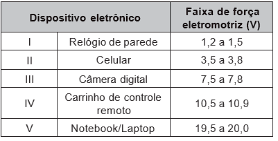
Considere que uma bateria é construída pela associação em série de três pilhas de lítio-iodo, nas condições-padrão, conforme as semiequações de redução apresentadas.
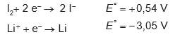
Essa bateria é adequada para o funcionamento de qual dispositivo eletrônico?
B) II.
C) III.
D) IV.
E) V.
Questão 134.
O alcoolômetro Gay Lussac é um instrumento destinado a medir o teor de álcool, em porcentagem de volume (v/v), de soluções de água e álcool na faixa de 0 °GL a 100 °GL, com divisões de 0,1 °GL. A concepção do alcoolômetro se baseia no princípio de flutuabilidade de Arquimedes, semelhante ao funcionamento de um densímetro. A escala do instrumento é aferida a 20 °C, sendo necessária a correção da medida, caso a temperatura da solução não esteja na temperatura de aferição. É apresentada parte da tabela de correção de um alcoolômetro, com a temperatura.
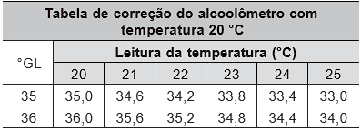
É necessária a correção da medida do instrumento, pois um aumento na temperatura promove o(a)
B) aumento da densidade da água e do álcool.
C) mudança do volume dos materiais por dilatação.
D) aumento da concentração de álcool durante a medida.
E) alteração das propriedades químicas da mistura álcool e água.
Questão 135.
O Prêmio Nobel de Química de 2000 deveu-se à descoberta e ao desenvolvimento de polímeros condutores. Esses materiais têm ampla aplicação em novos dispositivos eletroluminescentes (LEDs), células fotovoltaicas etc. Uma propriedade-chave de um polímero condutor é a presença de ligações duplas conjugadas ao longo da cadeia do polímero.
Um exemplo desse polímero é representado pela estrutura
B) 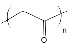
C) 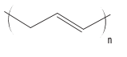
D)

E) 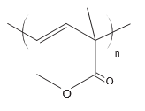
Questão 136.
Um segmento de reta está dividido em duas partes na proporção áurea quando o todo está para uma das partes na mesma razão em que essa parte está para a outra. Essa constante de proporcionalidade é comumente representada pela letra grega φ, e seu valor é dado pela solução positiva da equação φ2 = φ + 1.
Assim como a potência φ2, as potências superiores de φ podem ser expressas da forma aφ + b, em que a e b são inteiros positivos, como apresentado no quadro.

A potência φ7, escrita na forma aφ + b (a e b são inteiros positivos), é
B) 7φ + 2
C) 9φ + 6
D) 11φ + 7
E) 13φ + 8
Questão 137.
O Atomium, representado na imagem, é um dos principais pontos turísticos de Bruxelas. Ele foi construído em 1958 para a primeira grande exposição mundial depois da Segunda Guerra Mundial, a Feira Mundial de Bruxelas.
Trata-se de uma estrutura metálica construída no formato de um cubo. Essa estrutura está apoiada por um dos vértices sobre uma base paralela ao plano do solo, e a diagonal do cubo, contendo esse vértice, é ortogonal ao plano da base. Centradas nos vértices desse cubo, foram construídas oito esferas metálicas, e uma outra esfera foi construída centrada no ponto de interseção das diagonais do cubo. As oito esferas sobre os vértices são interligadas segundo suas arestas, e a esfera central se conecta a elas pelas diagonais do cubo.
Todas essas interligações são feitas por tubos cilíndricos que possuem escadas em seu interior, permitindo o deslocamento de pessoas pela parte interna da estrutura. Na diagonal ortogonal à base, o deslocamento é feito por um elevador, que permite o deslocamento entre as esferas da base e a esfera do ponto mais alto, passando pela esfera central.
Considere um visitante que se deslocou pelo interior do Atomium sempre em linha reta e seguindo o menor trajeto entre dois vértices, passando por todas as arestas e todas as diagonais do cubo.

A projeção ortogonal sobre o plano do solo do trajeto percorrido por esse visitante é representada por

B)

C)

D)

E)

Questão 138.
A Copa do Brasil teve, até a edição de 2018, 15 times diferentes como campeões da competição, conforme apresentado na imagem. Suponha que, como homenagem aos times campeões, a Confederação Brasileira de Futebol (CBF) pretenda colocar um painel na sua sede. Esse painel teria 6 linhas e, em cada uma delas, 5 placas, referentes a cada edição da competição, com o nome do time vencedor, o brasão e o ano do título. O painel deve ser fabricado de modo que a primeira linha só tenha clubes gaúchos (Internacional, Grêmio e Juventude); a segunda, apenas times cariocas (Flamengo, Vasco e Fluminense); a terceira, somente times mineiros (Cruzeiro e Atlético Mineiro); a quarta, exclusivamente clubes paulistas (Corinthians, Palmeiras, Santos, Paulista FC, Santo André), e as duas últimas sem nenhuma restrição.

Qual expressão determina a quantidade de painéis diferentes que a CBF poderá montar?
 .
.
B) 7! 5! 7! 9! 10!.
C) 30!.
D)
 .
.
E)
 .
.
Questão 139.
Uma rede de hamburgueria tem três franquias em cidades distintas. Visando incluir um novo tipo de lanche no cardápio, o gerente de marketing da rede sugeriu que fossem colocados à venda cinco novos tipos de lanche, em edições especiais. Os lanches foram oferecidos pelo mesmo período de tempo em todos os franqueados. O tipo que apresentasse a maior média por franquia seria incluído definitivamente no cardápio. Terminado o período de experiência, a gerência recebeu um relatório descrevendo as quantidades vendidas, em unidade, de cada um dos cinco tipos de lanche nas três franquias.

Com base nessas informações, a gerência decidiu incluir no cardápio o lanche de tipo
B) II.
C) III.
D) IV.
E) V.
Questão 140.
Uma grande rede de supermercados adota um sistema de avaliação dos faturamentos de suas filiais, considerando a média de faturamento mensal em milhão. A matriz da rede paga uma comissão para os representantes dos supermercados que atingirem uma média de faturamento mensal (M), conforme apresentado no quadro.

Um supermercado da rede obteve os faturamentos num dado ano, conforme apresentado no quadro

Nas condições apresentadas, os representantes desse supermercado avaliam que receberão, no ano seguinte, a comissão de tipo
B) II.
C) III.
D) IV.
E) V.
Questão 141.
Aplicativos que gerenciam serviços de hospedagem têm ganhado espaço no Brasil e no mundo por oferecer opções diferenciadas em termos de localização e valores de hospedagem. Em um desses aplicativos, o preço P a ser pago pela hospedagem é calculado considerando um preço por diária d, acrescido de uma taxa fixa de limpeza L e de uma taxa de serviço. Essa taxa de serviço é um valor percentual s calculado sobre o valor pago pelo total das diárias.
Nessa situação, o preço a ser pago ao aplicativo para uma hospedagem de n diárias pode ser obtido pela expressão
B) P = d.n+L+d.s
C) P = d+L+s
D) P = d.n.s+L
E) P = d.n+L+s
Questão 142.
O organizador de uma competição de lançamento de dardos pretende tornar o campeonato mais competitivo. Pelas regras atuais da competição, numa rodada, o jogador lança 3 dardos e pontua caso acerte pelo menos um deles no alvo. O organizador considera que, em média, os jogadores têm, em cada lançamento, ½ de probabilidade de acertar um dardo no alvo
A fim de tornar o jogo mais atrativo, planeja modificar as regras de modo que a probabilidade de um jogador pontuar em uma rodada seja igual ou superior a 9/10. Para isso, decide aumentar a quantidade de dardos a serem lançados em cada rodada.
Com base nos valores considerados pelo organizador da competição, a quantidade mínima de dardos que devem ser disponibilizados em uma rodada para tornar o jogo mais atrativo é
B) 4.
C) 6.
D) 9.
E) 10.
Questão 143.
O gráfico apresenta o nível de ocupação dos cinco reservatórios de água que abasteciam uma cidade em 2 de fevereiro de 2015.

Nessa data, o reservatório com o maior volume de água era o
B) II.
C) III.
D) IV.
E) V.
Questão 144.
Uma pessoa realizou uma pesquisa com alguns alunos de uma escola, coletando suas idades, e organizou esses dados no gráfico

Qual é a média das idades, em ano, desses alunos?
B) 12.
C) 18.
D) 19.
E) 27.
Questão 145.
Em um estudo realizado pelo IBGE em quatro estados e no Distrito Federal, com mais de 5 mil pessoas com 10 anos ou mais, observou-se que a leitura ocupa, em média, apenas seis minutos do dia de cada pessoa. Na faixa de idade de 10 a 24 anos, a média diária é de três minutos. No entanto, no grupo de idades entre 24 e 60 anos, o tempo médio diário dedicado à leitura é de 5 minutos. Entre os mais velhos, com 60 anos ou mais, a média é de 12 minutos.
A quantidade de pessoas entrevistadas de cada faixa de idade seguiu a distribuição percentual descrita no quadro.

Os valores de x e y do quadro são, respectivamente, iguais a
B) 10 e 90.
C) 20 e 60.
D) 20 e 80.
E) 25 e 50.
Questão 146.
Um zootecnista pretende testar se uma nova ração para coelhos é mais eficiente do que a que ele vem utilizando atualmente. A ração atual proporciona uma massa média de 10 kg por coelho, com um desvio padrão de 1 kg, alimentado com essa ração durante um período de três meses.
O zootecnista selecionou uma amostra de coelhos e os alimentou com a nova ração pelo mesmo período de tempo. Ao final, anotou a massa de cada coelho, obtendo um desvio padrão de 1,5 kg para a distribuição das massas dos coelhos dessa amostra.
Para avaliar a eficiência dessa ração, ele utilizará o coeficiente de variação (CV) que é uma medida de dispersão definida por CV = S/X em que s representa o desvio padrão e x a média das massas dos coelhos que foram alimentados com uma determinada ração.
O zootecnista substituirá a ração que vinha utilizando pela nova, caso o coeficiente de variação da distribuição das massas dos coelhos que foram alimentados com a nova ração for menor do que o coeficiente de variação da distribuição das massas dos coelhos que foram alimentados com a ração atual.
A substituição da ração ocorrerá se a média da distribuição das massas dos coelhos da amostra, em quilograma, for superior a
B) 9,5.
C) 10,0.
D) 10,5.
E) 15,0.
Questão 147.
Nos setores mais altamente desenvolvidos da sociedade contemporânea, o transplante de necessidades sociais para individuais é de tal modo eficaz que a diferença entre elas parece puramente teórica. As criaturas se reconhecem em suas mercadorias; encontram sua alma em seu automóvel, casa em patamares, utensílios de cozinha. A Cifra de César é um exemplo de um método de codificação de mensagens usado por Júlio César para se comunicar com seus generais.
No método, cada letra era trocada por uma letra que aparecia no alfabeto um número fixo de casas adiante (ou atrás) de forma cíclica. A seguir temos um exemplo em que cada letra é substituída pela que vem três posições à frente.

Para quebrar um código como esse, a análise de frequências das letras de um texto é uma ferramenta importante.
Uma análise do texto do romance O guarani, de José de Alencar, que é composto por 491 631 letras, gerou o seguinte gráfico de frequências:

Após codificar esse texto com a regra do exemplo fornecido, faz-se nova análise de frequência no texto codificado.
As quatro letras mais frequentes, em ordem decrescente de frequência, do texto codificado são
B) D, E, F e G.
C) D, H, R e V.
D) R, L, B e X.
E) X, B, L e P.
Questão 148.
O quadro apresenta o número de terremotos de magnitude maior ou igual a 7, na escala Richter, ocorridos em nosso planeta nos anos de 2000 a 2011.

Um pesquisador acredita que a mediana representa bem o número anual típico de terremotos em um período.
Segundo esse pesquisador, o número anual típico de terremotos de magnitude maior ou igual a 7 é
B) 15.
C) 15,5.
D) 15,7.
E) 17,5.
Questão 149.
A receita R de uma empresa ao final de um mês é o dinheiro captado com a venda de mercadorias ou com a prestação de serviços nesse mês, e a despesa D é todo o dinheiro utilizado para pagamento de salários, contas de água e luz, impostos, entre outros. O lucro mensal obtido ao final do mês é a diferença entre a receita e a despesa registradas no mês. O gráfico apresenta as receitas e despesas, em milhão de real, de uma empresa ao final dos cinco primeiros meses de um dado ano.

A previsão para os próximos meses é que o lucro mensal não seja inferior ao maior lucro obtido até o mês de maio.
Nessas condições, o lucro mensal para os próximos meses deve ser maior ou igual ao do mês de
B) fevereiro.
C) março.
D) abril.
E) maio.
Questão 150.
A depressão caracteriza-se por um desequilíbrio na química cerebral. Os neurônios de um deprimido não respondem bem aos estímulos dos neurotransmissores. Os remédios que combatem a depressão têm o objetivo de restabelecer a química cerebral. Com o aumento gradativo de casos de depressão, a venda desses medicamentos está em crescente evolução, conforme ilustra o gráfico.

No período de 2005 a 2009, o aumento percentual no volume de vendas foi de
B) 54,5.
C) 120.
D) 220.
E) 283,2.
Questão 151.
Um casal está planejando comprar um apartamento de dois quartos num bairro de uma cidade e consultou a página de uma corretora de imóveis, encontrando 105 apartamentos de dois quartos à venda no bairro desejado. Eles usaram um aplicativo da corretora para gerar a distribuição dos preços do conjunto de imóveis selecionados.
O gráfico ilustra a distribuição de frequências dos preços de venda dos apartamentos dessa lista (em mil reais), no qual as faixas de preço são dadas por ]300, 400], ]400, 500], ]500, 600], ]600, 700], ]700, 800], ]800, 900], ]900, 1 000], ]1 000, 1 100], ]1 100, 1 200] e ]1 200, 1 300].
A mesma corretora anuncia que cerca de 50% dos apartamentos de dois quartos nesse bairro, publicados em sua página, têm preço de venda inferior a 550 mil reais. No entanto, o casal achou que essa última informação não era compatível com o gráfico obtido.

Com base no gráfico obtido, o menor preço, p (em mil reais), para o qual pelo menos 50% dos apartamentos apresenta preço inferior a p é
B) 700.
C) 800.
D) 900.
E) 1000.
Questão 152.
Para a comunicação entre dois navios é utilizado um sistema de codificação com base em valores numéricos. Para isso, são consideradas as operações triângulo ∆ e estrela *, definidas sobre o conjunto dos números reais por x∆y = x2 + xy – y2 e x * y = xy + x.
O navio que deseja enviar uma mensagem deve fornecer um valor de entrada b, que irá gerar um valor de saída, a ser enviado ao navio receptor, dado pela soma das duas maiores soluções da equação (a∆b) * (b∆a) = 0. Cada valor possível de entrada e saída representa uma mensagem diferente já conhecida pelos dois navios.
Um navio deseja enviar ao outro a mensagem “ATENÇÃO!”. Para isso, deve utilizar o valor de entrada b = 1.
Dessa forma, o valor recebido pelo navio receptor será
B) √3
C) √1
D)

E)

Questão 153.
Um parque temático brasileiro construiu uma réplica em miniatura do castelo de Liechtenstein. O castelo original, representado na imagem, está situado na Alemanha e foi reconstruído entre os anos de 1840 e 1842, após duas destruições causadas por guerras.

O castelo possui uma ponte de 38,4m de comprimento e 1,68m de largura. O artesão que trabalhou para o parque produziu a réplica do castelo, em escala. Nessa obra, as medidas do comprimento e da largura da ponte eram, respectivamente, 160cm e 7 cm.
A escala utilizada para fazer a réplica é
B) 1 : 240.
C) 1 : 24.
D) 1 : 4,2.
E) 1 : 2,4.
Questão 154.
A demografia médica é o estudo da população de médicos no Brasil nos aspectos quantitativo e qualitativo, sendo um dos seus objetivos fazer projeções sobre a necessidade da formação de novos médicos. Um desses estudos gerou um conjunto de dados que aborda a evolução do número de médicos e da população brasileira por várias décadas. O quadro apresenta parte desses dados.

Segundo uma projeção estatística, a variação do número de médicos e o da população brasileira de 2010 para 2020 será a média entre a variação de 1990 para 2000 e a de 2000 para 2010. Com o resultado dessa projeção, determina-se o número de médicos por mil habitantes no ano de 2020.
O número, com duas casas na parte decimal, mais próximo do número de médicos por mil habitantes no ano de 2020 seria de
B) 0,49.
C) 1,71.
D) 2,06.
E) 3,32.
Questão 155.
Um atleta produz sua própria refeição com custo fixo de R$ 10,00. Ela é composta por 400g de frango, 600g de batata-doce e uma hortaliça. Atualmente, os preços dos produtos para essa refeição são:

Em relação a esses preços, haverá um aumento de 50% no preço do quilograma de batata-doce, e os outros preços não serão alterados. O atleta deseja manter o custo da refeição, a quantidade de batata-doce e a hortaliça. Portanto, terá que reduzir a quantidade de frango.
Qual deve ser a redução percentual da quantidade de frango para que o atleta alcance seu objetivo?
B) 28,0.
C) 30,0.
D) 50,0.
E) 70,0.
Questão 156.

A expressão algébrica que representa as posições P(t) da massa m, ao longo do tempo, no gráfico, é
B) - 3 sen (2t).
C) 3 cos (2t).
D) - 6 cos (2t).
E) 6 sen (2t).
Questão 157.
Uma construtora, pretendendo investir na construção de imóveis em uma metrópole com cinco grandes regiões, fez uma pesquisa sobre a quantidade de famílias que mudaram de uma região para outra, de modo a determinar qual região foi o destino do maior fluxo de famílias, sem levar em consideração o número de famílias que deixaram a região. Os valores da pesquisa estão dispostos em uma matriz A = [Aij] , i, j {1, 2, 3, 4, 5}, em que o elemento [Aij] corresponde ao total de famílias (em dezena) que se mudaram da região i para a região j durante um certo período, e o elemento Aii é considerado nulo, uma vez que somente são consideradas mudanças entre regiões distintas. A seguir, está apresentada a matriz com os dados da pesquisa.

Qual região foi selecionada para o investimento da construtora?
B) 2.
C) 3.
D) 4.
E) 5.
Questão 158.
Para realizar um voo entre duas cidades que distam 2 000 km uma da outra, uma companhia aérea utilizava um modelo de aeronave A, capaz de transportar até 200 passageiros. Quando uma dessas aeronaves está lotada de passageiros, o consumo de combustível é de 0,02 litro por quilômetro e por passageiro. Essa companhia resolveu trocar o modelo de aeronave A pelo modelo de aeronave B, que é capaz de transportar 10% de passageiros a mais do que o modelo A, mas consumindo 10% menos combustível por quilômetro e por passageiro.
A quantidade de combustível consumida pelo modelo de aeronave B, em relação à do modelo de aeronave A, em um voo lotado entre as duas cidades, é
B) 1% menor.
C) igual.
D) 1% maior.
E) 11% maior.
Questão 159.
Em uma corrida automobilística, os carros podem fazer paradas nos boxes para efetuar trocar de pneus. Nessas trocas, o trabalho é feito por um grupo de três pessoas em cada pneu. Considere que os grupos iniciam o trabalho no mesmo instante, trabalham à mesma velocidade e cada grupo trabalha em um único pneu. Com os quatro grupos completos, são necessários 4 segundos para que a troca seja efetuada. O tempo gasto por um grupo para trocar um pneu é inversamente proporcional ao número de pessoas trabalhando nele. Em uma dessas paradas, um dos trabalhadores passou mal, não pôde participar da troca e nem foi substituído, de forma que um dos quatro grupos de troca ficou reduzido.
Nessa parada específica, com um dos grupos reduzido, qual foi o tempo gasto, em segundo, para trocar os quatro pneus?
B) 5,7
C) 5,0
D) 4,5
E) 4,4
Questão 160.
Um nutricionista verificou, na dieta diária do seu cliente, a falta de 800mg do mineral A, de 1 000 mg do mineral B e de 1 200 mg do mineral C. Por isso, recomendou a compra de suplementos alimentares que forneçam os minerais faltantes e informou que não haveria problema se consumisse mais desses minerais do que o recomendado.
O cliente encontrou cinco suplementos, vendidos em sachês unitários, cujos preços e as quantidades dos minerais estão apresentados a seguir:
• Suplemento I: contém 50mg do mineral A, 100mg do mineral B e 200 mg do mineral C e custa R$2,00;
• Suplemento II: contém 800mg do mineral A, 250mg do mineral B e 200 mg do mineral C e custa R$3,00;
• Suplemento III: contém 250mg do mineral A, 1 000mg do mineral B e 300 mg do mineral C e custa R$5,00;
• Suplemento IV: contém 600mg do mineral A, 500mg do mineral B e 1 000 mg do mineral C e custa R$6,00;
• Suplemento V: contém 400mg do mineral A, 800mg do mineral B e 1 200 mg do mineral C e custa R$8,00;
O cliente decidiu comprar sachês de um único suplemento no qual gastasse menos dinheiro e ainda suprisse a falta de minerais indicada pelo nutricionista, mesmo que consumisse alguns deles além de sua necessidade.
Nessas condições, o cliente deverá comprar sachês do suplemento
B) II
C) III
D) IV
E) V
Questão 161.
O administrador de um teatro percebeu que, com o ingresso do evento a R$20,00, um show conseguia atrair 200 pessoas e que, a cada R$1,00 de redução no preço do ingresso, o número de pessoas aumentava em 40. Ele sabe que os donos do teatro só admitem trabalhar com valores inteiros para os ingressos, pela dificuldade de disponibilizar troco, e pretende convencê-los a diminuir o preço do ingresso. Assim, apresentará um gráfico da arrecadação em função do valor do desconto no preço atual do ingresso.
O gráfico que mais se assemelha ao que deve ser elaborado pelo administrador é

B)

C)

D)

E)

Questão 162.
O quadro representa a relação entre o preço de um produto (R) e seu respectivo imposto devido (I)

O gráfico que melhor representa essa relação é

B)

C)

D)

E)

Questão 163.
A relação de Newton-Laplace estabelece que o módulo volumétrico de um fluido é diretamente proporcional ao quadrado da velocidade do som (em metro por segundo) no fluido e à sua densidade (em quilograma por metro cúbico), com uma constante de proporcionalidade adimensional.
Nessa relação, a unidade de medida adequada para o módulo volumétrico é
B) kg.m-1.s-2
C) kg.m-5.s2
D) kg-1.m1.s2
E) kg-1.m5.s-2
Questão 164.
Uma pessoa pretende viajar por uma companhia aérea que despacha gratuitamente uma mala com até 10 kg.
Em duas viagens que realizou, essa pessoa utilizou a mesma mala e conseguiu 10 kg com as seguintes combinações de itens:

Para ter certeza de que sua bagagem terá massa de 10 kg, ela decide levar essa mala com duas calças, um sapato e o máximo de camisetas, admitindo que itens do mesmo tipo têm a mesma massa.
Qual a quantidade máxima de camisetas que essa pessoa poderá levar?
B) 24
C) 26
D) 33
E) 39
Questão 165.
Um automóvel apresenta um desempenho médio de 16 km/L. Um engenheiro desenvolveu um novo motor a combustão que economiza, em relação ao consumo do motor anterior, 0,1 L de combustível a cada 20 km percorridos.
O valor do desempenho médio do automóvel com o novo motor, em quilômetro por litro, expresso com uma casa decimal, é
B) 16,1.
C) 16,4.
D) 17,4.
E) 18,0.
Questão 166.
O projeto de um contêiner, em forma de paralelepípedo reto retangular, previa a pintura dos dois lados (interno e externo) de cada uma das quatro paredes com tinta acrílica e a pintura do piso interno com tinta epóxi. O construtor havia pedido, a cinco fornecedores diferentes, orçamentos das tintas necessárias, mas, antes de iniciar a obra, resolveu mudar o projeto original, alterando o comprimento e a largura para o dobro do originalmente previsto, mantendo inalterada a altura. Ao pedir novos orçamentos aos fornecedores, para as novas dimensões, cada um deu uma resposta diferente sobre as novas quantidades de tinta necessárias.
Em relação ao previsto para o projeto original, as novas quantidades de tinta necessárias informadas pelos fornecedores foram as seguintes:
• Fornecedor I: “O dobro, tanto para as paredes quanto para o piso”
• Fornecedor II: “O dobro para as paredes e quatro vezes para o piso”
• Fornecedor III: “Quatro vezes, tanto para as paredes quanto para o piso”
• Fornecedor IV: “Quatro vezes para as paredes e o dobro para o piso”
• Fornecedor V: “Oito vezes para as paredes e quatro vezes para o piso”
Analisando as informações dos fornecedores, o construtor providenciará quantidade adequada de material. Considere a porta de acesso do contêiner como parte de uma das paredes. Qual dos fornecedores prestou as informações adequadas, devendo ser o escolhido pelo construtor para a aquisição do material?
B) II
C) III
D) IV
E) V
Questão 167.
Um povoado com 100 habitantes está passando por uma situação de seca prolongada e os responsáveis pela administração pública local decidem contratar a construção de um reservatório. Ele deverá ter a forma de um cilindro circular reto, cuja base tenha 5 metros de diâmetro interno, e atender à demanda de água da população por um período de exatamente sete dias consecutivos.
No oitavo dia, o reservatório vazio é completamente reabastecido por carros-pipa.
Considere que o consumo médio diário por habitante é de 120 litros de água. Use 3 como aproximação para p.
Nas condições apresentadas, o reservatório deverá ser construído com uma altura interna mínima, em metro, igual a
B) 3,10
C) 4,35
D) 4,48
E) 5,60
Questão 168.
Num octaedro regular, duas faces são consideradas opostas quando não têm nem arestas, nem vértices em comum. Na figura, observa-se um octaedro regular e uma de suas planificações, na qual há uma face colorida na cor cinza escuro e outras quatro faces numeradas.

Qual(is) face(s) ficará(ão) oposta(s) à face de cor cinza escuro, quando o octaedro for reconstruído a partir da planificação dada?
B) 1 e 3
C) 1
D) 2
E) 4
Questão 169.
O instrumento de percussão conhecido como triângulo é composto por uma barra fina de aço, dobrada em um formato que se assemelha a um triângulo, com uma abertura e uma haste, conforme ilustra a Figura 1.

Uma empresa de brindes promocionais contrata uma fundição para a produção de miniaturas de instrumentos desse tipo. A fundição produz, inicialmente, peças com o formato de um triângulo equilátero de altura h, conforme ilustra a Figura 2. Após esse processo, cada peça é aquecida, deformando os cantos, e cortada em um dos vértices, dando origem à miniatura. Assuma que não ocorram perdas de material no processo de produção, de forma que o comprimento da barra utilizada seja igual ao perímetro do triângulo equilátero representado na Figura 2.
Considere 1,7 como valor aproximado para √3
Nessas condições, o valor que mais se aproxima da medida do comprimento da barra, em centímetro, é
B) 13,60.
C) 20,40.
D) 27,18.
E) 36,24.
Questão 170.
Uma pessoa comprou uma caneca para tomar sopa, conforme ilustração.

Sabe-se que 1 cm3 = 1 mL e que o topo da caneca é uma circunferência de diâmetro (D) medindo 10 cm, e a base é um círculo de diâmetro (d) medindo 8 cm. Além disso, sabe-se que a altura (h) dessa caneca mede 12 cm (distância entre o centro das circunferências do topo e da base)
Utilize 3 como aproximação para π.
Qual é a capacidade volumétrica, em mililitro, dessa caneca?
B) 408
C) 732
D) 2196
E) 2928
Questão 171.
O dono de uma loja pretende usar cartões imantados para a divulgação de sua loja. A empresa que fornecerá o serviço lhe informa que o custo de fabricação do cartão é de R$ 0,01 por centímetro quadrado e que disponibiliza modelos tendo como faces úteis para impressão:
• um triângulo equilátero de lado 12 cm;
• um quadrado de lado 8 cm;
• um retângulo de lados 11 cm e 8 cm;
• um hexágono regular de lado 6 cm;
• um círculo de diâmetro 10 cm.
O dono da loja está disposto a pagar, no máximo, R$ 0,80 por cartão. Ele escolherá, dentro desse limite de preço, o modelo que tiver maior área de impressão.
Use 3 como aproximação para p e use 1,7 como aproximação para √3
Nessas condições, o modelo que deverá ser escolhido tem como face útil para impressão um
B) quadrado.
C) retângulo.
D) hexágono.
E) círculo.
Questão 172.
Um ciclista amador de 61 anos de idade utilizou um monitor cardíaco para medir suas frequências cardíacas em quatro diferentes tipos de trechos do percurso. Os resultados das frequências cardíacas máximas alcançadas nesses trechos foram:

Sabe-se que a faixa aeróbica ideal para o ganho de condicionamento físico é entre 65% e 85% da frequência cardíaca máxima (Fc máx.), que, por sua vez, é determinada pela fórmula:
Fc máx. = 220 – idade,
em que a idade é dada em ano e Fc máx. é dada em bpm (batimento por minuto).
Os trechos do percurso nos quais esse ciclista se mantém dentro de sua faixa aeróbica ideal, para o ganho de condicionamento físico, são
B) leve no plano, forte no plano e subida moderada.
C) forte no plano, subida moderada e subida forte.
D) forte no plano e subida moderada.
E) leve no plano e subida forte.
Questão 173.
Um lava-rápido oferece dois tipos de lavagem de veículos: lavagem simples, ao preço de R$ 20,00, e lavagem completa, ao preço de R$ 35,00. Para cobrir as despesas com produtos e funcionários, e não ter prejuízos, o lava-rápido deve ter uma receita diária de, pelo menos, R$ 300,00.
Para não ter prejuízo, o menor número de lavagens diárias que o lava-rápido deve efetuar é
B) 8
C) 9
D) 15
E) 20
Questão 174.
Após consulta médica, um paciente deve seguir um tratamento composto por três medicamentos: X, Y e Z. O paciente, para adquirir os três medicamentos, faz um orçamento em três farmácias diferentes, conforme o quadro.

Dessas farmácias, algumas oferecem descontos:
• na compra dos medicamentos X e Y na Farmácia 2, recebe-se um desconto de 20% em ambos os produtos, independentemente da compra do medicamento Z, e não há desconto para o medicamento Z;
• na compra dos 3 medicamentos na Farmácia 3, recebe-se 20% de desconto no valor total da compra.
O paciente deseja efetuar a compra de modo a minimizar sua despesa com os medicamentos.
De acordo com as informações fornecidas, o paciente deve comprar os medicamentos da seguinte forma:
B) X e Y na Farmácia 1, e Z na Farmácia 3.
C) X e Y na Farmácia 2, e Z na Farmácia 3.
D) X na Farmácia 2, e Y e Z na Farmácia 3.
E) X, Y e Z na Farmácia 3.
Questão 175.
Muitos brinquedos que frequentemente são encontrados em praças e parques públicos apresentam formatos de figuras geométricas bidimensionais e tridimensionais. Uma empresa foi contratada para desenvolver uma nova forma de brinquedo. A proposta apresentada pela empresa foi de uma estrutura formada apenas por hastes metálicas, conectadas umas às outras, como apresentado na figura. As hastes de mesma tonalidade e espessura são congruentes.

Com base na proposta apresentada, quantas figuras geométricas planas de cada tipo são formadas pela união das hastes?
B) 24 trapézios isósceles e 12 quadrados.
C) 2 paralelogramos e 12 quadrados.
D) 8 trapézios isósceles e 12 quadrados.
E) 12 trapézios escalenos e 12 retângulos.
Questão 176.
O sistema de numeração romano ainda é utilizado na indicação de capítulos e volumes de livros, na designação de séculos e, em ordem cronológica, de papas e reis de mesmo nome. São utilizadas sete letras do alfabeto:
Quatro fundamentais: I (vale 1); X (vale 10); C (vale 100) e M (vale 1 000)
Três secundárias: V (vale 5); L (vale 50) e D (vale 500).
As regras para escrever números romanos são:
1. Não existe símbolo correspondente ao zero;
2. Os símbolos fundamentais podem ser repetidos até três vezes e seus valores são adicionados. Exemplo: XXX = 30;
3. Uma letra posta à esquerda de outra de maior valor indica subtração dos respectivos valores. Exemplo: IX = 10 − 1 = 9;
4. Uma letra posta à direita de outra de maior valor indica adição dos respectivos valores. Exemplo: XI = 10 + 1 = 11.
Em uma cidade europeia há uma placa indicando o ano de sua fundação: MCDLXIX.
Quantos anos de fundação essa cidade comemorará em 2050?
B) 381
C) 579
D) 581
E) 601
Questão 177.
Uma das bases mais utilizadas para representar um número é a base decimal. Entretanto, os computadores trabalham com números na base binária. Nessa base, qualquer número natural é representado usando apenas os algarismos 0 e 1. Por exemplo, as representações dos números 9 e 12, na base binária, são 1001 e 1100, respectivamente. A operação de adição, na base binária, segue um algoritmo similar ao utilizado na base decimal, como detalhado no quadro:

Por exemplo, na base binária, a soma dos números 10 e 10 é 100, como apresentado

Considerando as informações do texto, o resultado da adição 9 + 12 será representado, na base binária, por
B) 1101.
C) 1111.
D) 10101.
E) 11001.
Questão 178.
Uma unidade de medida comum usada para expressar áreas de terrenos de grandes dimensões é o hectare, que equivale a 10 000 m2. Um fazendeiro decide fazer um loteamento utilizando 3 hectares de sua fazenda, dos quais 0,9 hectare será usado para a construção de ruas e calçadas e o restante será dividido em terrenos com área de 300 m2 cada um. Os 20 primeiros terrenos vendidos terão preços promocionais de R$ 20 000,00 cada, e os demais, R$ 30 000,00 cada
Nas condições estabelecidas, o valor total, em real, obtido pelo fazendeiro com a venda de todos os terrenos será igual a
B) 1 600 000
C) 1 900 000
D) 2 200 000
E) 2 800 000
Questão 179.
Uma pessoa produzirá uma fantasia utilizando como materiais: 2 tipos de tecidos diferentes e 5 tipos distintos de pedras ornamentais. Essa pessoa tem à sua disposição 6 tecidos diferentes e 15 pedras ornamentais distintas.
A quantidade de fantasias com materiais diferentes que podem ser produzidas é representada pela expressão

B)

C)

D)

E)

Questão 180.
Os diretores de uma escola precisam construir um laboratório para uso dos alunos. Há duas possibilidades:
(i) Um laboratório do tipo A, com capacidade para 100 usuários, a um custo de 180 mil reais e gastos de 60 mil reais por ano para manutenção;
(ii) um laboratório do tipo B, com capacidade para 80 usuários, a um custo de 120 mil reais e gastos com manutenção de 16 mil reais por ano.
Considera-se que, em qualquer caso, o laboratório implantado será utilizado na totalidade de sua capacidade.
A economia da escola, na utilização de um laboratório tipo B, em vez de um laboratório tipo A, num período de 4 anos, por usuário, será de
B) 1,90 mil reais.
C) 2,30 mil reais.
D) 2,36 mil reais.
E) 2,95 mil reais.